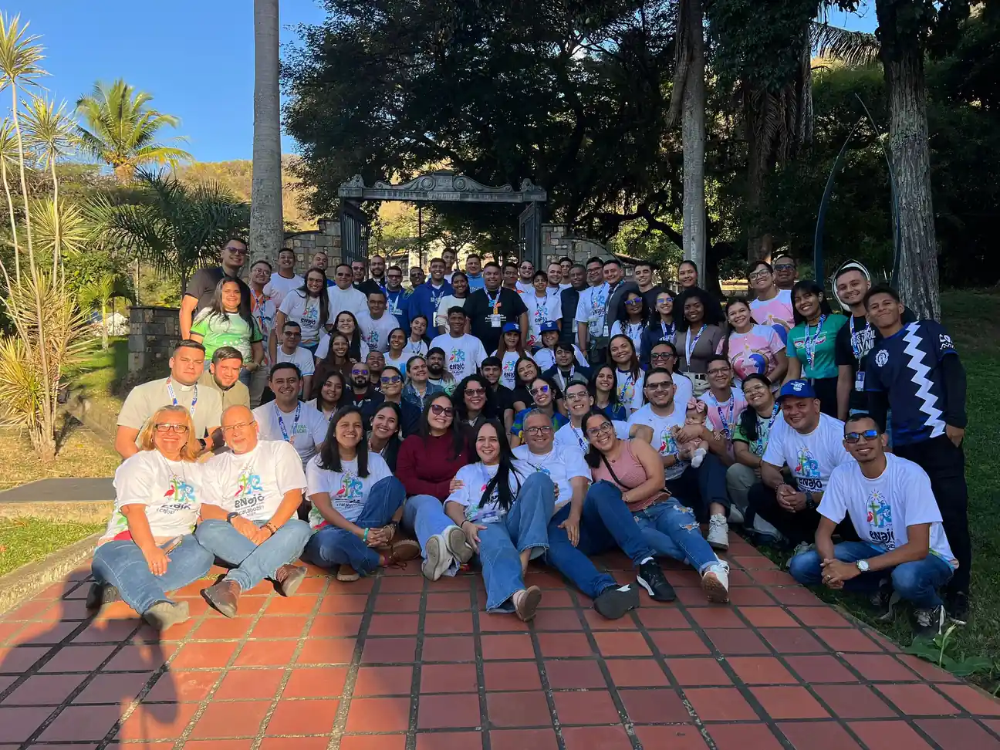

Juventud
Área de Juventud
El Área de Juventud es un espacio de formación, reflexión y acompañamiento de los jóvenes. Apoya a los equipos de pastoral juvenil de las arquidiócesis y diócesis de Venezuela.

Qué hace el Área
El Área de Juventud favorece la organización de la Pastoral Juvenil. Apoya a los equipos de pastoral juvenil de las arquidiócesis y diócesis con encuentros formativos, jornadas y asambleas. También integra a los jóvenes en otras pastorales.
Competencias
- Impulsar espacios de formación, reflexión y acompañamiento para los jóvenes.
- Favorecer la organización de la pastoral juvenil en las distintas instancias, en sinergia con otras pastorales e instituciones que se relacionan con los jóvenes.
- Apoyar a los equipos de pastoral juvenil en el acompañamiento de los procesos pastorales y de la vida vocacional de los jóvenes. Esto incluye participar en las actividades de los secretariados arquidiocesanos y diocesanos: encuentros formativos, jornadas celebrativas y asambleas diocesanas y provinciales.
- Promover que los jóvenes se integren en los servicios y áreas de otras pastorales.
Cómo se coordina
La Coordinación Nacional de Pastoral Juvenil junta a los obispos que presiden la Comisión Episcopal, al coordinador del Área, a los responsables nacionales de la Red de Movimientos Juveniles y al repetidor nacional del servicio misionero Joven Misión. Se suman los delegados provinciales, jóvenes elegidos por los asesores y responsables de cada provincia eclesiástica.
Cada diócesis cuenta con un coordinador joven laico, designado por el obispo, y con un asesor que puede ser sacerdote, religioso o laico.
La coordinadora del Área de Juventud es Génesis Martínez.
El Rediseño del Secretariado Permanente del Episcopado Venezolano (SPEV), aprobado en enero de 2023, ubica al Centro dentro del SPEV y lo vincula con la Comisión Episcopal de Adolescencia y Juventud, entre otras.
Qué hace durante el año
En 2026 el calendario fue así:
- Febrero: Jornada Nacional de la Juventud y Asamblea Nacional de Pastoral Juvenil. En 2026 la Asamblea tuvo 34 diócesis presentes, según la CEV.
- Todo el año: formación virtual, como el programa Kairós Joven, que cerró su edición el 22 de junio de 2026.
- Segundo semestre: retiros provinciales, como los de Valencia en septiembre y Carúpano en noviembre de 2026, y encuentros de coordinadores y asesores.
- Rumbo a 2027: el Censo Nacional de Peregrinos para la Jornada Mundial de la Juventud en Seúl.
Galería

Equipo del Área de Juventud. Equipo de personas jóvenes con camisetas negras abrazadas frente a la puerta de un edificio. Crédito: Centro de Laicos, Familia y Juventud, CEV.
Para profundizar
Actividades del Área de Juventud
Seguir leyendoAsambleas de Pastoral Juvenil
Seguir leyendoCenso de peregrinos y JMJ Seúl 2027
Seguir leyendoJornada Nacional de la Juventud 2026
Seguir leyendoKairós Joven
Seguir leyendoRecursos de Juventud
Seguir leyendoRed de Movimientos Juveniles de Venezuela
Seguir leyendo
Eventos de esta área
Del 3 al 8 de agosto de 2027
Jornada Mundial de la Juventud, Seúl 2027
AnunciadoEncuentro · Juventud
Celebración central el 15 de febrero de 2026; actividades diocesanas del 7 de febrero al 7 de marzo
Jornada Nacional de la Juventud 2026
RealizadoJornada · Juventud
19 de noviembre y 3 de diciembre de 2025
Del 23 al 25 de mayo de 2024
Convocatoria del 25 de enero de 2024
11 y 12 de febrero de 2023
Del 21 de marzo al 24 de abril de 2022
Del 17 al 20 de febrero de 2022
Domingo 13 de febrero de 2022, con semana de animación del 7 al 13
Sesiones del 17 de marzo al 22 de junio de 2026
Febrero de 2026 (nota de la CEV del 23 de febrero)
Tres días antes del 2 de marzo de 2026
Valencia, del 26 al 28 de septiembre de 2026; Cumaná, del 6 al 8 de noviembre de 2026
Miércoles 21 de enero de 2026